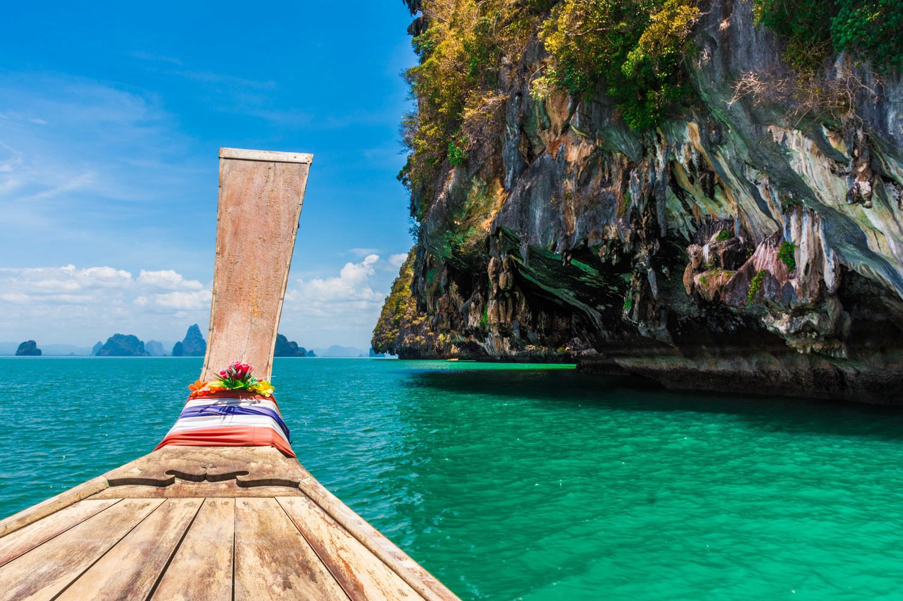

Traveling: Countrys
Thailand
Picture of Thailand:
Thailand is a Southeast Asian gem known for its warm hospitality, rich culture, and affordable luxury. It offers a little bit of everything—sun-soaked beaches in the south, lush mountains in the north, and buzzing cities like Bangkok. Street food is a way of life here, with vibrant night markets offering pad Thai, mango sticky rice, and spicy curries. Temples like Wat Pho and Wat Arun showcase the country’s spiritual side. The islands, such as Koh Phi Phi and Koh Lipe, are famous for their turquoise waters and diving spots. Inland cities like Chiang Mai and Pai give a more peaceful, traditional vibe. Whether you’re seeking adventure, relaxation, or cultural immersion, Thailand delivers it all. It’s also great for solo travelers and budget-friendly trips..